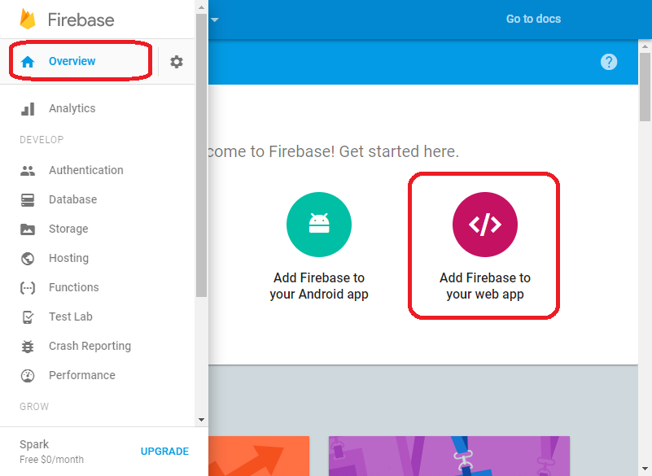

1. Open Sites List
2. Open site settings
3. Enable Firebase snipppet
4. Paste Firebase snippet from Firebase console
5. Click red "+" in the bottom right corner to add a new block.
6. To add the "Firebase Blocks" block drag it from the "Block" panel. You can find them in the "Article" section.
7. Click blue "Gear" icon in the top right corner to open block parameters.